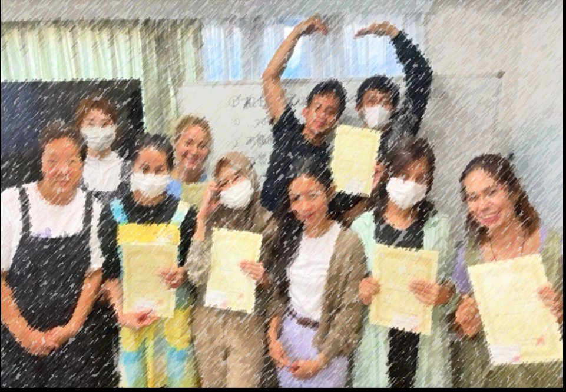
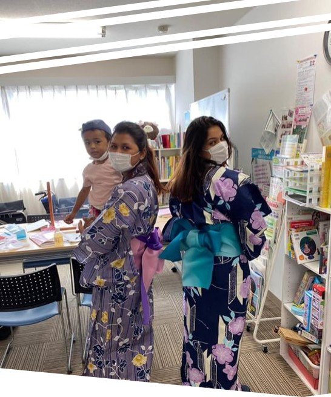

下が広いほど若い国。上が広くなるほど高齢化が進んでいます。
💡 日本は世界で最も高齢化が進んだ国。介護人材の不足が深刻です。
出典：UN World Population Prospects 2024 / 内閣府「高齢社会白書」（推定値含む）
| 特定産業分野 | 現在の人数 令和6年12月末 |
受入上限 令和6〜10年度 |
|---|---|---|
| 🏙️ 静岡県の人口 （参考） | 3,448,607人 | — |
| 🏙️ 横浜市の人口 （参考） | 約3,770,000人 | — |
| 🏙️ 大和市の人口 （参考） | 245,765人 | — |
| 🏙️ 横浜市瀬谷区の人口 （参考） | 120,152人 | — |
| 🏙️ 袋井市の人口 （参考） | 87,117人 | — |
| 🍜 飲食料品製造 | 74,380人 | 139,000人 |
| 🏭 工業製品製造 | 45,183人 | 173,300人 |
| 🏥 介護 | 44,367人 | 135,000人 |
| 🏗 建設 | 38,365人 | 80,000人 |
| 🌾 農業 | — | 78,000人 |
| 🍽 外食業 | — | 53,000人 |
| 🧹 ビルクリーニング | 6,140人 | 37,000人 |
| 🚢 造船・舶用工業 | 9,665人 | 36,000人 |
| 🚌 自動車運送業 | 新分野 | 24,500人 |
| 🏨 宿泊 | — | 23,000人 |
| 🐟 漁業 | — | 17,000人 |
| 🔧 自動車整備 | — | 10,000人 |
| 🌲 木材産業 | 新分野 | 5,000人 |
| ✈️ 航空 | 1,382人 | 4,400人 |
| 🚃 鉄道 | 新分野 | 3,800人 |
| 🌿 林業 | 新分野 | 1,000人 |
| 【総計】 | 284,466人 | 820,000人 |
🟢 緑色の行は地域の人口（参考値）です。特定技能の受入上限と比較できます。
🔶 介護は受入上限135,000人と大きな需要があります。景気に左右されない安定した仕事です。
出典：出入国在留管理庁「特定技能在留外国人数」（令和6年12月末現在・速報値） / 出入国在留管理庁「特定技能制度受入見込数」（令和6〜10年度）
| 種類 | 内容 | 金額の目安 |
|---|---|---|
| 基本給 | 毎月もらう基本のお金 | 約18〜22万円 |
| 処遇改善加算 | 国が介護職員のために追加したお金 | 約1〜3万円 |
| 夜勤手当 | 1回につき（月4〜6回程度） | 5,000〜10,000円 |
| 資格手当 | 初任者研修 / 介護福祉士 | 5,000 / 10,000〜20,000円 |
出典：厚生労働省「介護労働実態調査」令和5年度 / 神奈川県ハローワーク求人情報
まずここからスタート
130時間・最短約3か月
450時間・実務3年で受験資格
在留資格「介護」取得可能
介護福祉士で永住の道も
※ 介護福祉士の国家資格を取得すると、在留資格「介護」を取得でき、更新に上限がなくなります。
👆 各レベルをクリックすると展開・翻訳が見えます
| 日本語 | 読み | 🇪🇸 ES | 🇧🇷 PT | 🇨🇳 ZH | 🇵🇭 TL | 🇷🇺 RU | 🇸🇳 FR | 🇹🇭 TH | 🇺🇸 EN |
|---|